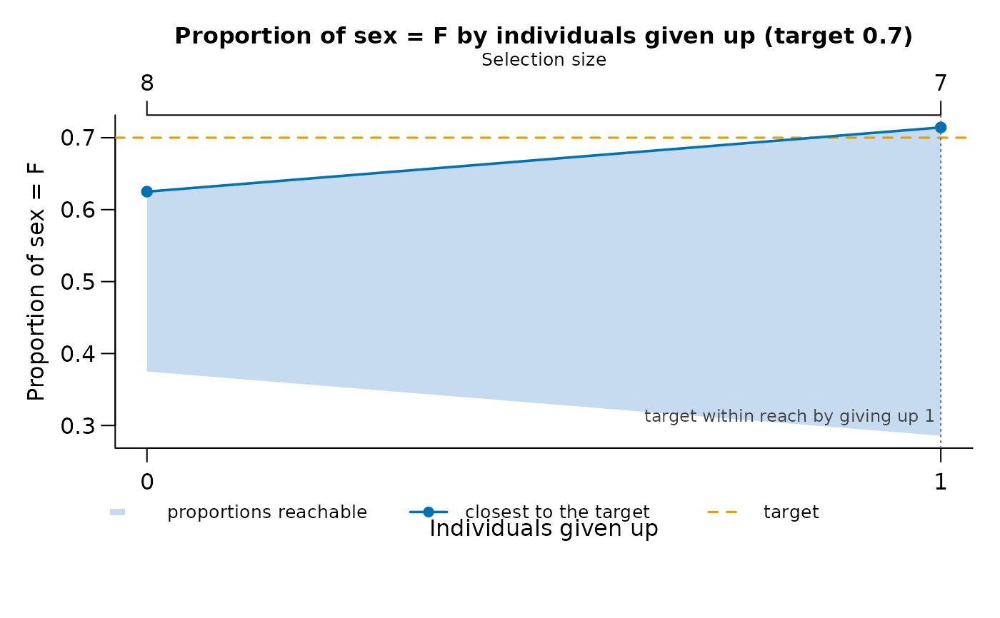
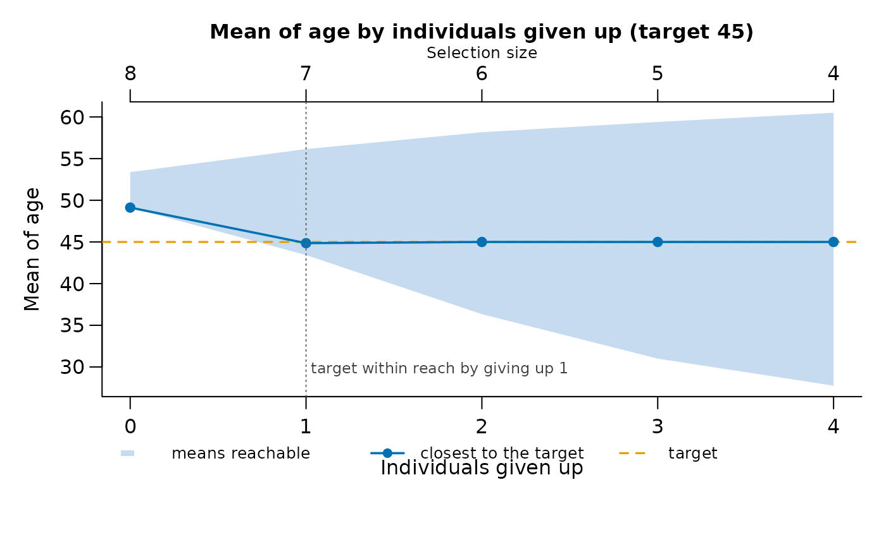

Compute the trade-off between selection size and composition
Source:R/rkn_tradeoff.R
rkn_tradeoff.RdFor a target composition of the whole selection, as in
rkn_select_global, shows what each individual given up allows: for each
number of individuals below the largest possible selection, the range of proportions
of the category, or of means of a numeric covariate, reached by the selections of that
size, and the one closest to the target. It helps to choose the max_loss of
rkn_select_global() before selecting.
Arguments
- g
An igraph object. Vertex names must be stored in V(g)$name. Vertex attributes cannot be named
degree,max_path_lengthor.name: these names are reserved for the structural measures computed during the selection. The network is usually built withrkn_graph_from_kinship, which also checks the samples; for a network built in another way, seerkn_check_samples.- covariate
Character. Name of a vertex attribute of the network, either categorical (character, factor or logical), such as
"sex"forV(g)$sex, or numeric, such as"age".- target
For a categorical covariate, the target proportion of one category among the selected individuals, named by the category, e.g.
c(F = 0.5); for a covariate with two categories, the proportions of both may be given, summing to 1, and the first is used. For a numeric covariate, the target mean, a single unnamed number, e.g.45. IfNULL(default), the target is the composition of the whole network, so that the selection keeps that of the cohort: the mean, or the proportion of the first category, which isTRUEfor a logical covariate, the first level for a factor, and the first in alphabetical order otherwise; for a categorical covariate this requires two categories.- max_loss
Either
NULL(default) or a non-negative integer, the largest number of individuals given up covered by the table. WithNULL, the table stops at the first number of individuals given up at which the target comes within reach (see Details), and at the latest at 5\ rounded up. With a number, it covers every number of individuals given up from 0 tomax_loss, and at most the size of the largest selection.- resolution
For numeric covariates only, a positive number: the values are rounded to multiples of
resolutionabove the smallest value to search the selections (see Details). IfNULL(default), integer values spanning at most 100 are not rounded (a resolution of 1, e.g. for ages in years or scores); other values are rounded to the smallest of 1, 2 or 5 times a power of 10 that divides their range into at most 100 steps, e.g. 0.5 for values from 16 to 45, or 2000 for values from 0 to 200,000. If the tables of the search would then exceed the memory budget, or take more than about five minutes (see Details), as with ages in years in cohorts of about a million samples, the default resolution is coarsened along the same sequence until they fit, andprint()says so.- seed
Optional integer. Random numbers are used only in the families beyond the computational budget (see Details); a seed makes the table reproducible. If
NULL(default), the current random number stream is used.- x
An
rkn_tradeoffobject.- ...
Not used.
- main
Title of the plot;
NULL(default) describes the covariate, the category if any, and the target.
Value
A data frame of class rkn_tradeoff, with one row per number of
individuals given up and the columns:
- loss
Number of individuals given up, below the largest selection.
- size
Size of the selection.
- proportion
Proportion of the category closest to the target among the selections of that size (the lower of two equally close);
meanfor a numeric covariate.- distance
Absolute difference between
proportionormeanand the target.- min_proportion, max_proportion
Lowest and highest proportions of the category among the selections of that size;
min_meanandmax_meanfor a numeric covariate.- log_count
Natural logarithm of the number of selections of that size at the smallest distance from the target, on either side;
NAwhen some family is beyond the computational budget.
The proportions and means are computed among the selected individuals with a known
value of the covariate, and are NA for a size at which no selection includes
one. The attribute "tradeoff" is a list describing the table: type
("proportion" or "mean"); covariate; category, for a
categorical covariate; target and cohort, whether the target is the
composition of the network; resolution, rounded and
coarsened, for a numeric covariate, whether some value was rounded and
whether the default resolution was coarsened to fit the memory and time budgets;
max_size, the size of the largest selection; max_loss, as given; reached, the number of individuals
given up at which the target comes within reach (NA if it does not within the
table); limited, why the default table stopped before the target came within
reach, "memory" or "work" for the memory limit or the computational
budget (NA otherwise); n_missing, the number of individuals of the
network with a missing value; and n_inexact, the number of families beyond
the computational budget.
print() shows the first rows and those around reached, with the
number of selections as a count. plot() draws, against the number of
individuals given up, the range of proportions or means (shaded), the one closest to
the target (line and points) and the target (dashed), with the size of the
selection on the top axis and, if the target comes within reach after giving up
individuals, a dotted line at that number.
Details
The largest possible selection keeps one maximum set of unrelated individuals per family, and a family usually has several, with different numbers of members in the category or different values of the covariate. The selections of the largest size therefore reach a range of proportions or means, from the lowest to the highest. This range is not an uncertainty: every proportion or mean in it is that of selections that exist. Giving up individuals widens it, since members with any value can be left out, and since smaller sets of unrelated members of a family can include individuals that none of its maximum sets includes.
For each number of individuals given up, the table reports the proportion or mean
closest to the target: the highest of the range when the target lies above it, the
lowest when the target lies below it, and, when the target lies within it, the
closest of those reached. A proportion among \(n\) individuals with a known value is
a multiple of \(1/n\), so that it usually lies within \(1/(2n)\) of a target within
the range (the range may have gaps when few families offer alternatives). When two
values on either side of the target are equally close, the table reports the lower,
while rkn_select_global() draws among the selections reaching either. The
target comes within reach at the first number of individuals given up at which it
lies within the range.
The distance from the target at the largest size is a property of the data, not an
approximation: it depends on the composition of the network, on the individuals
without relatives, who are always selected, and on the alternatives that each family
offers. rkn_select_global(g, covariate, target, max_loss = L) selects, among
the rows from 0 to L, the smallest distance and, among the rows reaching it,
the largest size. With a target beyond the range, such as c(F = 1), it selects the
highest proportion of the category.
For a numeric covariate, the means are those of the values rounded to multiples of
resolution, as in the search of rkn_select_global(): each lies within
half the resolution of the mean of the recorded values of the same selections, and
they are exact when no value is rounded, as for ages in whole years with the default
resolution.
The table comes from the exact counts of rkn_select_global() (see its
Details), without drawing a selection. With max_loss = NULL, the table is
computed with no individual given up, then for 1, 2, 4 and so on, doubling until the
target comes within reach or the limit of 5\
the number of individuals given up, and much faster for a numeric covariate. The
table also stops at the last number computed if the next would exceed the memory
limit of rkn_select_global(), or its computational budget, of about half a
minute on a recent laptop; print() reports why. With a number as
max_loss, the function stops with an error beyond the memory limit, and a
message warns beyond the computational budget that the table may take several
minutes.
The families beyond the computational budget of rkn_select_global() contribute
only maximum sets, and cannot give up individuals in the table: the range reachable
may then be wider than reported, and the number of selections is not available. Their
options come in part from random draws, so that seed makes the table
reproducible; print() reports their number.
Computation time
On one core of a laptop (Apple M2), the table for a target proportion of women took about 0.5 seconds for a population cohort of 10,000 samples, 13 seconds for 100,000 and 47 seconds for a family study of 10,000.
Examples
# A small relatedness network: two parents and their child (P1, P2, C1), a pair of
# siblings (S1, S2), three mutually related individuals (T1, T2, T3), a larger family
# (parents D1 and D2, their children K1 and K2, and K3, born to D2 and D3, a
# half-sibling of K1 and K2) and an unrelated individual (U1).
g <- igraph::graph_from_literal(P1 - C1 - P2, S1 - S2, T1 - T2 - T3 - T1,
D1 - K1 - D2, D1 - K2 - D2, K1 - K2,
D2 - K3 - D3, K1 - K3, K2 - K3, U1)
sex <- c(P1 = "F", C1 = "M", P2 = "M", S1 = "M", S2 = "F", T1 = "M", T2 = "F", T3 = "M",
D1 = "M", K1 = "F", D2 = "F", K2 = "M", K3 = "F", D3 = "M", U1 = "F")
age <- c(P1 = 52, C1 = 21, P2 = 55, S1 = 34, S2 = 31, T1 = 60, T2 = 33, T3 = 29,
D1 = 63, K1 = 35, D2 = 61, K2 = 38, K3 = 30, D3 = 58, U1 = 44)
igraph::V(g)$sex <- unname(sex[igraph::V(g)$name])
igraph::V(g)$age <- unname(age[igraph::V(g)$name])
# How many individuals to give up for 70% women
tr <- rkn_tradeoff(g, "sex", c(F = 0.7))
tr
#> <rkn_tradeoff> Proportion of sex = F by individuals given up (target 0.7)
#> Largest selection: 8 individuals, proportion of F from 0.3750 to 0.6250
#> Target within reach by giving up 1 (12.5% of the largest selection), a selection of 7
#> loss size proportion distance min_proportion max_proportion selections
#> 0 8 0.6250 0.0750 0.3750 0.6250 1
#> 1 7 0.7143 0.0143 0.2857 0.7143 5
plot(tr)

# The selection with that composition
rkn_select_global(g, "sex", c(F = 0.7), max_loss = 1, seed = 1)
#> <rkn_selection> Global selection (proportion of sex = F), seed 1
#> Call: rkn_select_global(g = g, covariate = "sex", target = c(F = 0.7), max_loss = 1, seed = 1)
#> Individuals: 15 | selected: 7 (46.7%)
#> Families: 5 | size min/mean/max: 1 / 3.00 / 6
#> Families with up to 5 members: 4 | with 6 or more: 1
#> Proportion of sex = F among the selected: 0.7143 (5 of 7; target 0.7)
#> Selected: 7 of a largest possible 8 (max_loss = 1)
#> Selections reaching this proportion and size: 5, one drawn uniformly
# Every number of individuals given up, from 0 to 4
rkn_tradeoff(g, "sex", c(F = 0.7), max_loss = 4)
#> <rkn_tradeoff> Proportion of sex = F by individuals given up (target 0.7)
#> Largest selection: 8 individuals, proportion of F from 0.3750 to 0.6250
#> Target within reach by giving up 1 (12.5% of the largest selection), a selection of 7
#> loss size proportion distance min_proportion max_proportion selections
#> 0 8 0.6250 0.0750 0.3750 0.6250 1
#> 1 7 0.7143 0.0143 0.2857 0.7143 5
#> 2 6 0.6667 0.0333 0.1667 0.8333 50
#> 3 5 0.6000 0.1000 0.0000 1.0000 199
#> 4 4 0.7500 0.0500 0.0000 1.0000 98
# The proportion of women of the network is within reach at the largest size
rkn_tradeoff(g, "sex")
#> <rkn_tradeoff> Proportion of sex = F by individuals given up (target 0.4667, the proportion of the network)
#> Largest selection: 8 individuals, proportion of F from 0.3750 to 0.6250
#> Target within reach at the largest selection: no individual needs to be given up
#> loss size proportion distance min_proportion max_proportion selections
#> 0 8 0.5000 0.0333 0.3750 0.6250 3
# A mean age of 45 years
plot(rkn_tradeoff(g, "age", 45, max_loss = 4))
